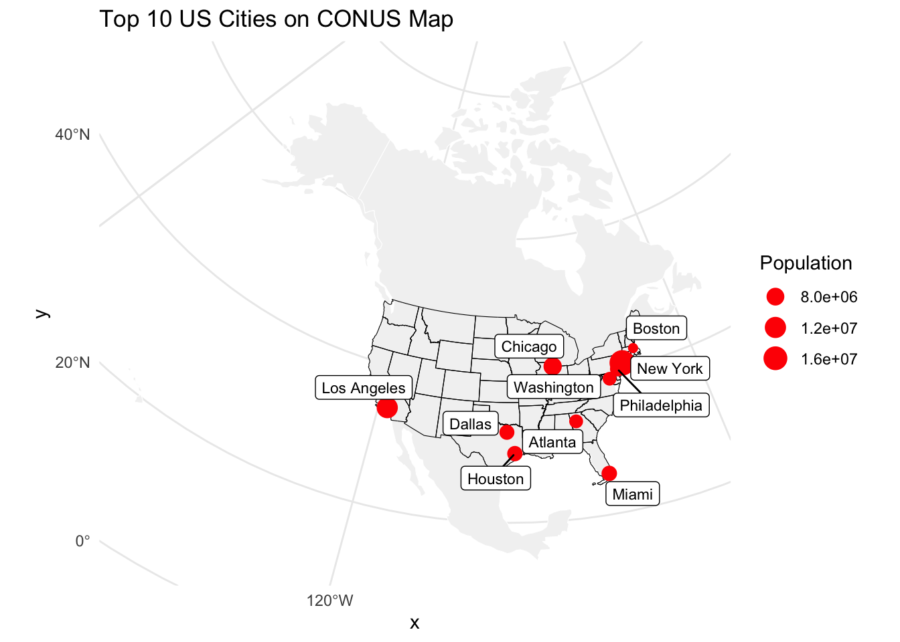
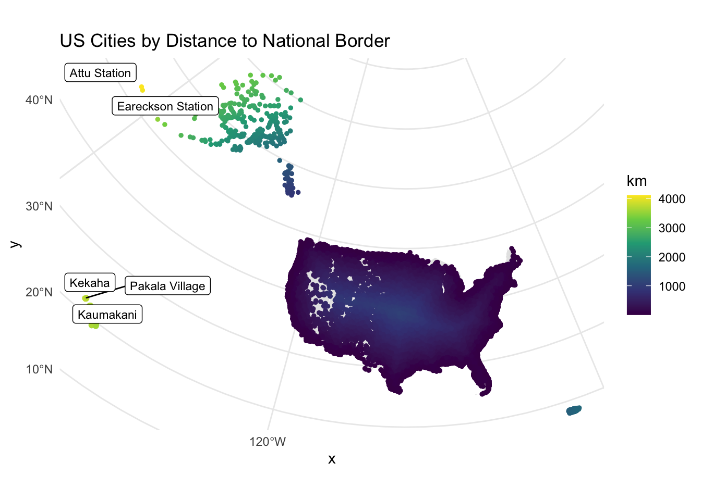
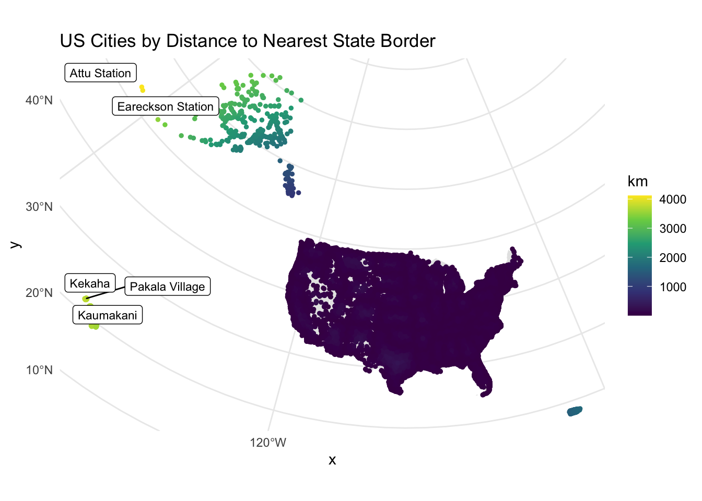
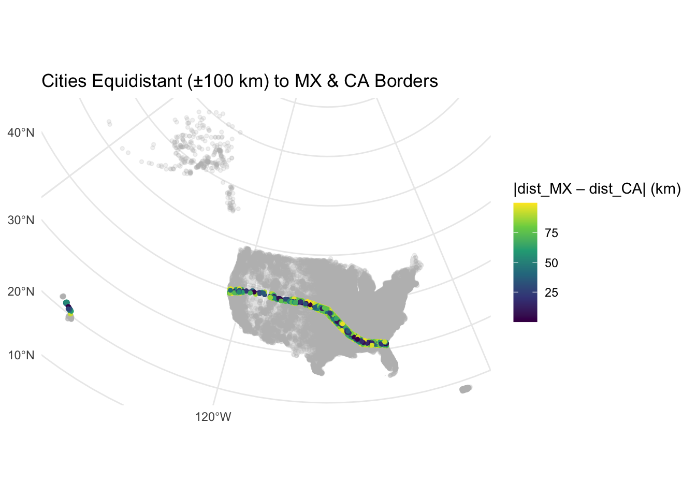
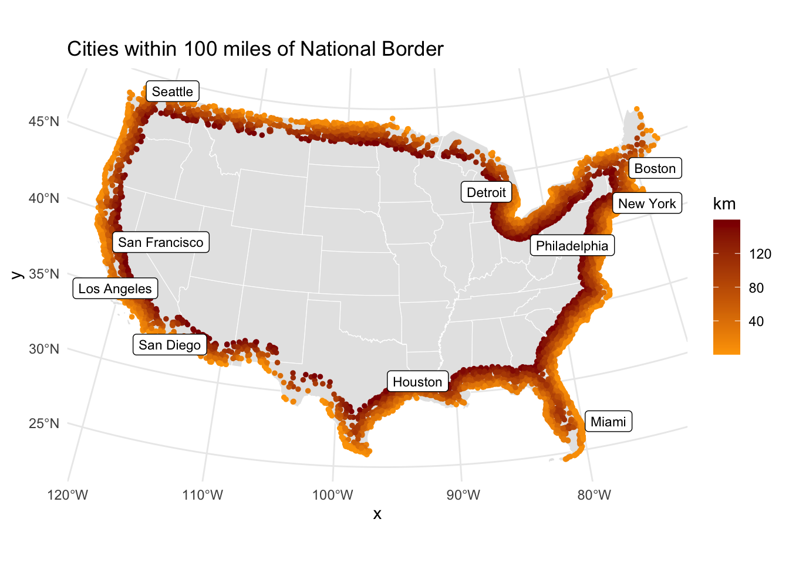

── Column specification ────────────────────────────────────────────────────────
Delimiter: ","
chr (9): city, city_ascii, state_id, state_name, county_fips, county_name, s...
dbl (6): lat, lng, population, density, ranking, id
lgl (2): military, incorporated
ℹ Use `spec()` to retrieve the full column specification for this data.
ℹ Specify the column types or set `show_col_types = FALSE` to quiet this message.
# 2.1 National border (all states unified, cast to lines)border_national <- states_conus %>%st_union() %>%st_cast("MULTILINESTRING")# 2.2 State boundaries preservedborder_states <- states_conus %>%st_cast("MULTILINESTRING")# 2.3 & 2.4 Mexico and Canada bordersmex_border <- countries %>%filter(sovereignt =="Mexico") %>%st_union() %>%st_cast("MULTILINESTRING")can_border <- countries %>%filter(sovereignt =="Canada") %>%st_union() %>%st_cast("MULTILINESTRING")# Compute distances (in km)cities <- cities %>%mutate(dist_national =as.numeric(st_distance(geometry, border_national)) /1000,dist_state =apply(st_distance(., border_states), 1, min) /1000,dist_mexico =as.numeric(st_distance(geometry, mex_border)) /1000,dist_canada =as.numeric(st_distance(geometry, can_border)) /1000 )
# Helper to build and print a flextableprint_top5 <-function(df, dist_col, label){ df %>%arrange(desc(.data[[dist_col]])) %>%slice_head(n =5) %>%select(city, state_name, all_of(dist_col)) %>%rename(State = state_name,Distance =!!sym(dist_col) ) %>%flextable() %>%set_caption(label) %>%print()}# now call itprint_top5(cities, "dist_national", "Top 5 Cities by Distance to National Border (km)")
a flextable object.
col_keys: `city`, `State`, `Distance`, `geometry`
header has 1 row(s)
body has 5 row(s)
original dataset sample:
city State Distance geometry
1 Attu Station Alaska 4118.416 POINT (-4933370 4126678)
2 Eareckson Station Alaska 4060.616 POINT (-4914808 4062603)
3 Kekaha Hawaii 3762.144 POINT (-5994637 191321.4)
4 Kaumakani Hawaii 3758.751 POINT (-5991136 181174.8)
5 Pakala Village Hawaii 3758.405 POINT (-5990830 184651.6)
print_top5(cities, "dist_state", "Top 5 Cities by Distance to Nearest State Border (km)")
a flextable object.
col_keys: `city`, `State`, `Distance`, `geometry`
header has 1 row(s)
body has 5 row(s)
original dataset sample:
city State Distance geometry
1 Attu Station Alaska 4118.416 POINT (-4933370 4126678)
2 Eareckson Station Alaska 4060.616 POINT (-4914808 4062603)
3 Kekaha Hawaii 3762.144 POINT (-5994637 191321.4)
4 Kaumakani Hawaii 3758.751 POINT (-5991136 181174.8)
5 Pakala Village Hawaii 3758.405 POINT (-5990830 184651.6)
print_top5(cities, "dist_mexico", "Top 5 Cities by Distance to Mexico Border (km)")
a flextable object.
col_keys: `city`, `State`, `Distance`, `geometry`
header has 1 row(s)
body has 5 row(s)
original dataset sample:
city State Distance geometry
1 Attu Station Alaska 5640.179 POINT (-4933370 4126678)
2 Eareckson Station Alaska 5576.325 POINT (-4914808 4062603)
3 Point Hope Alaska 5061.411 POINT (-2906000 4344595)
4 Gambell Alaska 5026.623 POINT (-3442954 4164681)
5 Point Lay Alaska 5016.127 POINT (-2675100 4341380)
print_top5(cities, "dist_canada", "Top 5 Cities by Distance to Canada Border (km)")
a flextable object.
col_keys: `city`, `State`, `Distance`, `geometry`
header has 1 row(s)
body has 5 row(s)
original dataset sample:
city State Distance geometry
1 Hawaiian Ocean View Hawaii 4151.650 POINT (-5875549 -313359.8)
2 Discovery Harbour Hawaii 4149.978 POINT (-5866690 -327788.8)
3 Waiohinu Hawaii 4146.501 POINT (-5863758 -325868.5)
4 Naalehu Hawaii 4144.805 POINT (-5860562 -328548.9)
5 Pahala Hawaii 4127.362 POINT (-5843625 -323478.1)
# Top 10 US cities by populationtop10_cities <- cities %>%arrange(desc(population)) %>%slice(1:10)ggplot() +geom_sf(data = countries, fill ="grey95", color ="white") +geom_sf(data = states_conus, fill =NA, color ="black", size =0.4) +geom_sf(data = top10_cities, aes(size = population), color ="red") + ggrepel::geom_label_repel(data = top10_cities,aes(label = city, geometry = geometry),stat ="sf_coordinates",size =3 ) +scale_size(range =c(2, 6)) +labs(size ="Population", title ="Top 10 US Cities on CONUS Map") +theme_minimal()

ggplot() +geom_sf(data = states_conus, fill ="grey90", color ="white") +geom_sf(data = cities, aes(color = dist_national), size =1) + ggrepel::geom_label_repel(data = cities %>%arrange(desc(dist_national)) %>%slice(1:5),aes(label = city, geometry = geometry),stat ="sf_coordinates",size =3 ) +scale_color_viridis_c(name ="km") +labs(title ="US Cities by Distance to National Border") +theme_minimal()

ggplot() +geom_sf(data = states_conus, fill ="grey90", color ="white") +geom_sf(data = cities, aes(color = dist_state), size =1) + ggrepel::geom_label_repel(data = cities %>%arrange(desc(dist_state)) %>%slice(1:5),aes(label = city, geometry = geometry),stat ="sf_coordinates",size =3 ) +scale_color_viridis_c(name ="km") +labs(title ="US Cities by Distance to Nearest State Border") +theme_minimal()

cities_eq <- cities %>%mutate(diff_mx_ca =abs(dist_mexico - dist_canada))ggplot(data = cities_eq) +# base mapgeom_sf(data = states_conus, fill ="grey90", color ="white") +# all cities, colored by diffgeom_sf(aes(color = diff_mx_ca), size =1) +# highlight only those within ±100 kmgghighlight( diff_mx_ca <=100,label_key = city,unhighlighted_params =list(alpha =0.2) ) +scale_color_viridis_c(name ="|dist_MX – dist_CA| (km)") +labs(title ="Cities Equidistant (±100 km) to MX & CA Borders" ) +theme_minimal()
Warning: Could not calculate the predicate for layer 1; ignored

# 100 miles ≈ 160 kmzone_km <-160in_zone <- cities %>%filter(dist_national <= zone_km)# Summary tablezone_summary <-tibble(Metric =c("Number of cities", "Population in zone", "% of total population"),Value =c(nrow(in_zone),sum(in_zone$population, na.rm =TRUE),sum(in_zone$population, na.rm =TRUE) /sum(cities$population, na.rm =TRUE) *100 ))knitr::kable(zone_summary, caption ="100-Mile Border Zone Summary")
100-Mile Border Zone Summary
Metric
Value
Number of cities
9.813000e+03
Population in zone
2.160430e+08
% of total population
5.370173e+01
ggplot() +geom_sf(data = states_conus, fill ="grey90", color ="white") +geom_sf(data = in_zone, aes(color = dist_national), size =1) +scale_color_gradient(low ="orange", high ="darkred", name ="km") + ggrepel::geom_label_repel(data = in_zone %>%arrange(desc(population)) %>%slice(1:10),aes(label = city, geometry = geometry),stat ="sf_coordinates", size =3 ) +labs(title ="Cities within 100 miles of National Border") +theme_minimal()

top_state_zone <- in_zone %>%group_by(state_name) %>%slice_max(population, n =1) %>%ungroup()ggplot() +geom_sf(data = states_conus, fill ="grey90", color ="white") +geom_sf(data = in_zone, alpha =0.2, color ="grey40", size =0.5) +geom_sf(data = top_state_zone, aes(size = population), color ="purple") + ggrepel::geom_label_repel(data = top_state_zone,aes(label = city, geometry = geometry),stat ="sf_coordinates", size =3 ) +labs(size ="Population",title ="Most Populous City per State within 100 mile Zone") +theme_minimal()
Warning: ggrepel: 5 unlabeled data points (too many overlaps). Consider
increasing max.overlaps